skimage¶
Image Processing for Python
scikit-image (a.k.a. skimage) is a collection of algorithms for image
processing and computer vision.
The main package of skimage only provides a few utilities for converting
between image data types; for most features, you need to import one of the
following subpackages:
Subpackages¶
- color
Color space conversion.
- data
Test images and example data.
- draw
Drawing primitives (lines, text, etc.) that operate on NumPy arrays.
- exposure
Image intensity adjustment, e.g., histogram equalization, etc.
- feature
Feature detection and extraction, e.g., texture analysis corners, etc.
- filters
Sharpening, edge finding, rank filters, thresholding, etc.
- graph
Graph-theoretic operations, e.g., shortest paths.
- io
Reading, saving, and displaying images and video.
- measure
Measurement of image properties, e.g., region properties and contours.
- metrics
Metrics corresponding to images, e.g. distance metrics, similarity, etc.
- morphology
Morphological operations, e.g., opening or skeletonization.
- restoration
Restoration algorithms, e.g., deconvolution algorithms, denoising, etc.
- segmentation
Partitioning an image into multiple regions.
- transform
Geometric and other transforms, e.g., rotation or the Radon transform.
- util
Generic utilities.
- viewer
A simple graphical user interface for visualizing results and exploring parameters.
Utility Functions¶
- img_as_float
Convert an image to floating point format, with values in [0, 1]. Is similar to
img_as_float64, but will not convert lower-precision floating point arrays to float64.- img_as_float32
Convert an image to single-precision (32-bit) floating point format, with values in [0, 1].
- img_as_float64
Convert an image to double-precision (64-bit) floating point format, with values in [0, 1].
- img_as_uint
Convert an image to unsigned integer format, with values in [0, 65535].
- img_as_int
Convert an image to signed integer format, with values in [-32768, 32767].
- img_as_ubyte
Convert an image to unsigned byte format, with values in [0, 255].
- img_as_bool
Convert an image to boolean format, with values either True or False.
- dtype_limits
Return intensity limits, i.e. (min, max) tuple, of the image’s dtype.
|
Return intensity limits, i.e. |
|
|
|
Convert an image to boolean format. |
|
Convert an image to floating point format. |
|
Convert an image to single-precision (32-bit) floating point format. |
|
Convert an image to double-precision (64-bit) floating point format. |
|
Convert an image to 16-bit signed integer format. |
|
Convert an image to 8-bit unsigned integer format. |
|
Convert an image to 16-bit unsigned integer format. |
|
Do a keyword search on scikit-image docstrings. |
Standard test images. |
|
dtype_limits¶
-
skimage.dtype_limits(image, clip_negative=False)[source]¶ Return intensity limits, i.e. (min, max) tuple, of the image’s dtype.
- Parameters
- imagendarray
Input image.
- clip_negativebool, optional
If True, clip the negative range (i.e. return 0 for min intensity) even if the image dtype allows negative values.
- Returns
- imin, imaxtuple
Lower and upper intensity limits.
ensure_python_version¶
img_as_bool¶
-
skimage.img_as_bool(image, force_copy=False)[source]¶ Convert an image to boolean format.
- Parameters
- imagendarray
Input image.
- force_copybool, optional
Force a copy of the data, irrespective of its current dtype.
- Returns
- outndarray of bool (bool_)
Output image.
Notes
The upper half of the input dtype’s positive range is True, and the lower half is False. All negative values (if present) are False.
img_as_float¶
-
skimage.img_as_float(image, force_copy=False)[source]¶ Convert an image to floating point format.
This function is similar to
img_as_float64, but will not convert lower-precision floating point arrays to float64.- Parameters
- imagendarray
Input image.
- force_copybool, optional
Force a copy of the data, irrespective of its current dtype.
- Returns
- outndarray of float
Output image.
Notes
The range of a floating point image is [0.0, 1.0] or [-1.0, 1.0] when converting from unsigned or signed datatypes, respectively. If the input image has a float type, intensity values are not modified and can be outside the ranges [0.0, 1.0] or [-1.0, 1.0].
Examples using skimage.img_as_float¶
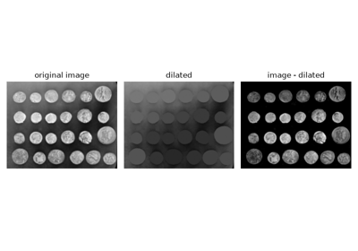
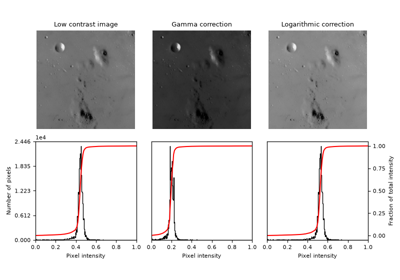
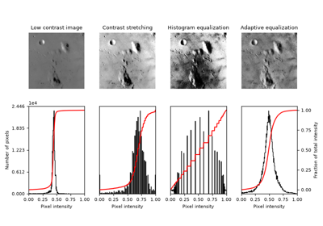
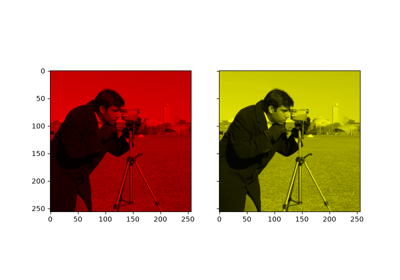
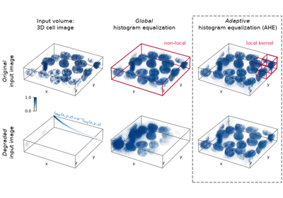
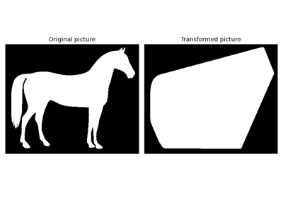
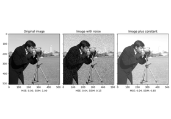
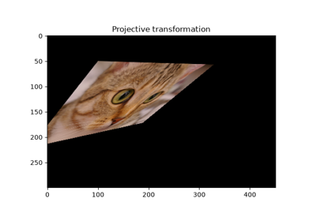
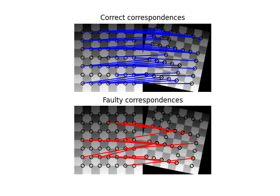
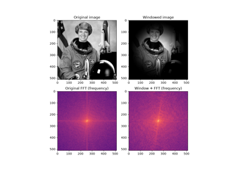
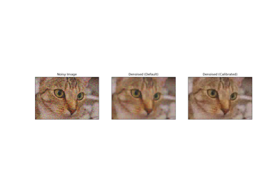
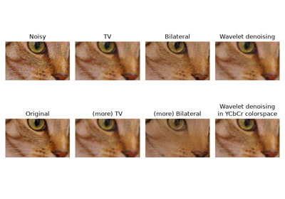
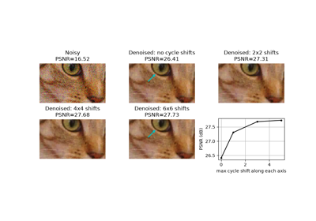
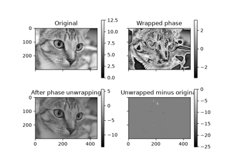
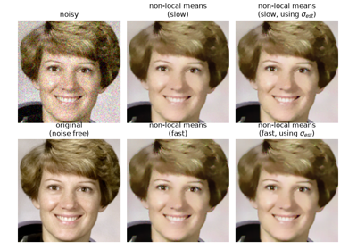
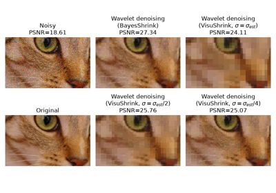
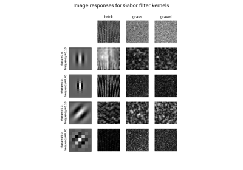
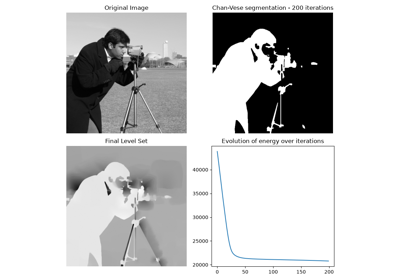
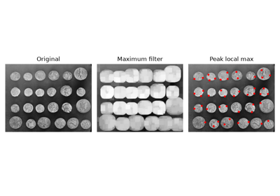
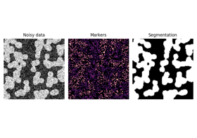
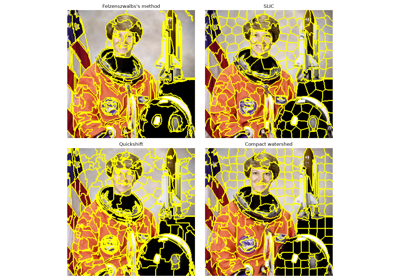
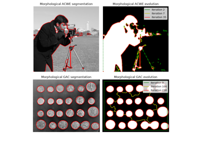
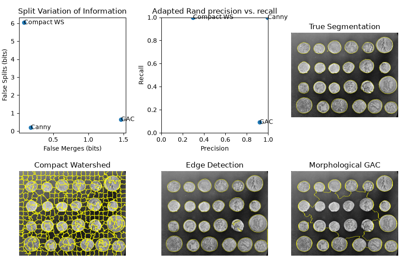
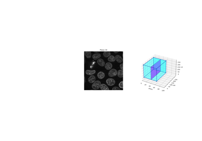
img_as_float32¶
-
skimage.img_as_float32(image, force_copy=False)[source]¶ Convert an image to single-precision (32-bit) floating point format.
- Parameters
- imagendarray
Input image.
- force_copybool, optional
Force a copy of the data, irrespective of its current dtype.
- Returns
- outndarray of float32
Output image.
Notes
The range of a floating point image is [0.0, 1.0] or [-1.0, 1.0] when converting from unsigned or signed datatypes, respectively. If the input image has a float type, intensity values are not modified and can be outside the ranges [0.0, 1.0] or [-1.0, 1.0].
img_as_float64¶
-
skimage.img_as_float64(image, force_copy=False)[source]¶ Convert an image to double-precision (64-bit) floating point format.
- Parameters
- imagendarray
Input image.
- force_copybool, optional
Force a copy of the data, irrespective of its current dtype.
- Returns
- outndarray of float64
Output image.
Notes
The range of a floating point image is [0.0, 1.0] or [-1.0, 1.0] when converting from unsigned or signed datatypes, respectively. If the input image has a float type, intensity values are not modified and can be outside the ranges [0.0, 1.0] or [-1.0, 1.0].
img_as_int¶
-
skimage.img_as_int(image, force_copy=False)[source]¶ Convert an image to 16-bit signed integer format.
- Parameters
- imagendarray
Input image.
- force_copybool, optional
Force a copy of the data, irrespective of its current dtype.
- Returns
- outndarray of int16
Output image.
Notes
The values are scaled between -32768 and 32767. If the input data-type is positive-only (e.g., uint8), then the output image will still only have positive values.
img_as_ubyte¶
-
skimage.img_as_ubyte(image, force_copy=False)[source]¶ Convert an image to 8-bit unsigned integer format.
- Parameters
- imagendarray
Input image.
- force_copybool, optional
Force a copy of the data, irrespective of its current dtype.
- Returns
- outndarray of ubyte (uint8)
Output image.
Notes
Negative input values will be clipped. Positive values are scaled between 0 and 255.
Examples using skimage.img_as_ubyte¶
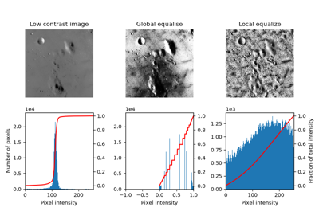
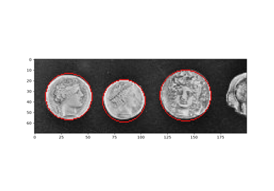
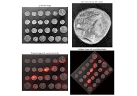
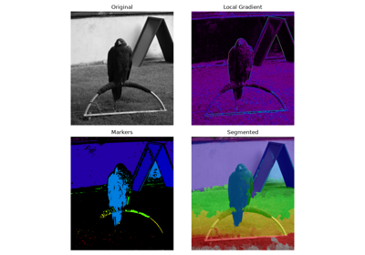
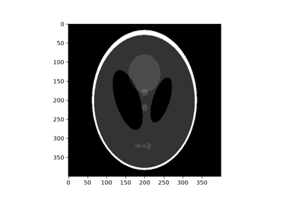
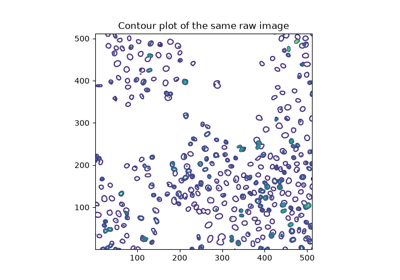
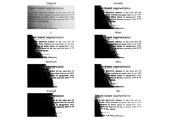
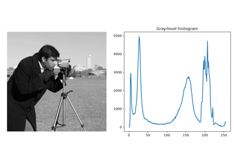
img_as_uint¶
-
skimage.img_as_uint(image, force_copy=False)[source]¶ Convert an image to 16-bit unsigned integer format.
- Parameters
- imagendarray
Input image.
- force_copybool, optional
Force a copy of the data, irrespective of its current dtype.
- Returns
- outndarray of uint16
Output image.
Notes
Negative input values will be clipped. Positive values are scaled between 0 and 65535.
lookfor¶
-
skimage.lookfor(what)[source]¶ Do a keyword search on scikit-image docstrings.
- Parameters
- whatstr
Words to look for.
Examples
>>> import skimage >>> skimage.lookfor('regular_grid') Search results for 'regular_grid' --------------------------------- skimage.lookfor Do a keyword search on scikit-image docstrings. skimage.util.regular_grid Find `n_points` regularly spaced along `ar_shape`.